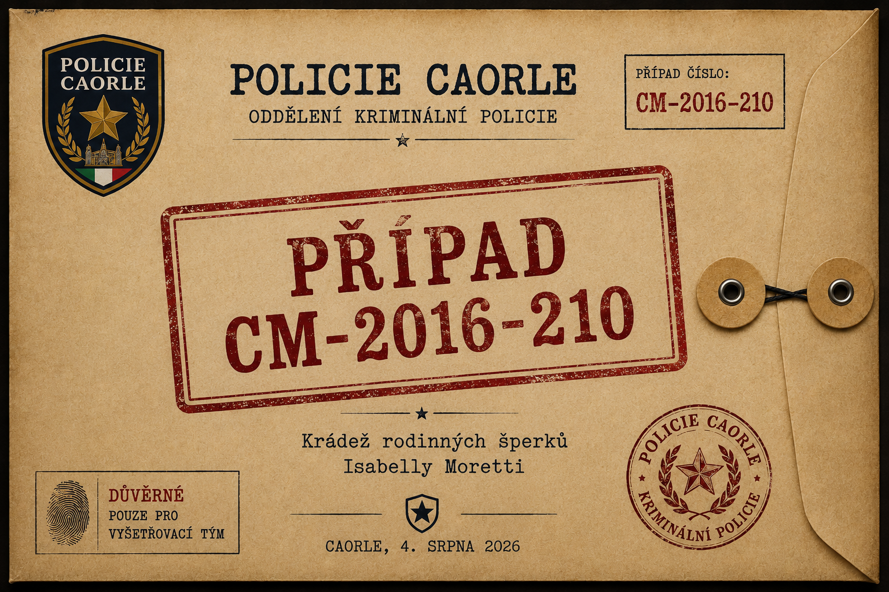

Případ Isabelly Moretti
ARCHIV 2016ZNOVU OTEVŘENO 2026

Celodenní detektivní hra pro děti (cca 8–12 let), 4–7 dospělých v rolích a jeden organizátor. Před deseti lety byly během slavnostního galavečera v hotelu Mare Blu odcizeny rodinné šperky Isabelly Moretti. Případ byl odložen jako neobjasněný. V roce 2026 se objevily nové důkazy a děti se stávají novým vyšetřovacím týmem, který má případ konečně vyřešit.
Než začnete
Průvodce pro organizátoraPravda příběhu, pravidla, doporučený průběh hry, kontrolní seznam. Přečtěte si jako první — pouze pro dospělé.
Průkazy vyšetřovatelůŠablona na vytištění — 4 průkazy na stránku, jeden pro každého malého detektiva.
Materiály pro tým (na začátku hry)
Úvodní dopis Isabelly MorettiPřečtěte dětem nahlas na úvod hry.
Policejní spisHlavní vyšetřovací složka: přehled případu, harmonogram galavečera, výpovědi šesti podezřelých, přehled důkazů.
Doplňkové důkazy a fotodokumentaceProgram večera, rozpis služeb, hotelové karty, forenzní zpráva, kniha ztrát a nálezů, fotografie F-01–F-14 a další.
Postavy — tisknout a předávat jednotlivě (tajné)
Pavel Novák — správce hotelu
Pavlína Králová — organizátorka galavečera
Vláďa Beneš — osobní řidič
Lenka Novotná — fotografka
Anna „Annička“ Veselá — servírka
Hanka Procházková — pokojská (pachatelka)
Každý dospělý smí vidět pouze svou vlastní kartu postavy. Vytiskněte každou zvlášť.
Nápovědy (pouze pro organizátora, vydávat postupně)
Nápovědy pro organizátoraSouhrnná nápověda a postupný seznam 12 nápověd.
12 karet nápověd pro dětiVytiskněte, rozstříhejte a vydávejte po jedné, jen když se tým zasekne.
Finále — otevřít až po vyřešení případu